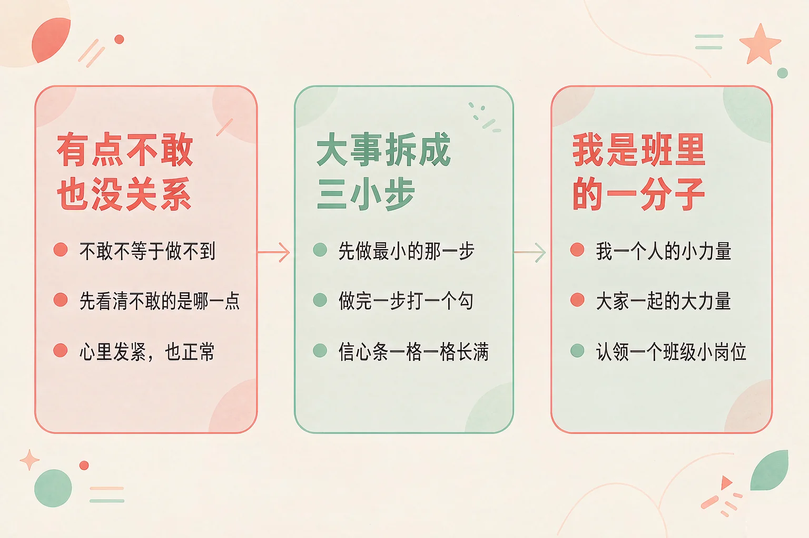
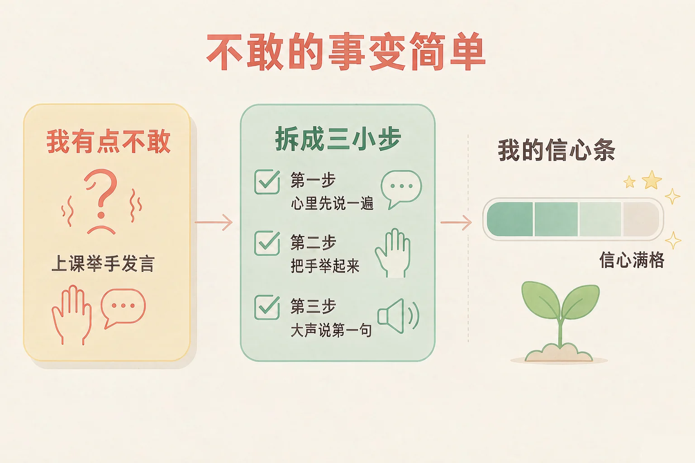
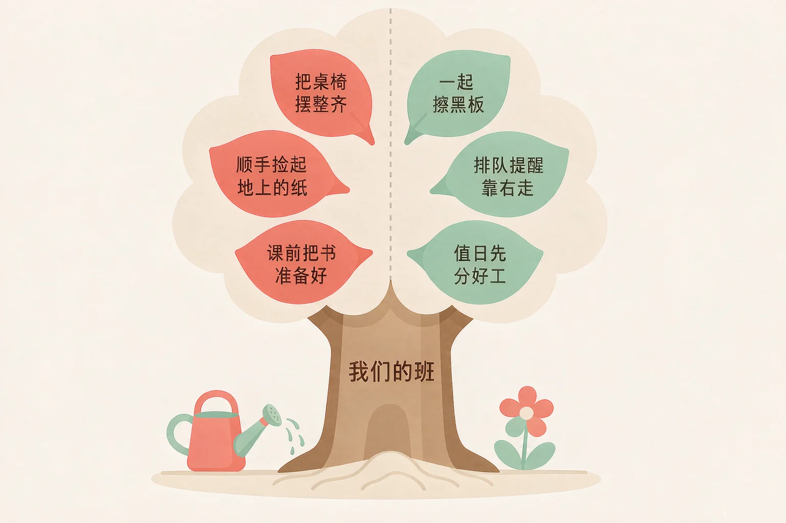

Gallery
v1.0.0 · skill v7.22.0
小学二年级 · 人际交往
有一件事你很想做，可心里一直说「我不敢」，这时候可以怎么办？

选一个你真正想知道的问题，后面的活动都会围着它转。
选择或输入后，这节课会围绕你的问题展开。
先凭直觉选一个，选完立刻看到解释——错了也没关系，正好知道要重点听哪里。
1. 明天要在班里读一小段课文，我有点不敢。下面哪个做法更有帮助？
把一件大事拆成几小步，先做最小的那一步，心里就有底了。错因提醒：常见错误是把「不敢」当成了「做不到」——不敢只是说明这件事有点大，拆小了就好办。
2. 班里的图书角有点乱，我可以做什么？
为班级做事不一定要很大，顺手做好一件小事就算。错因提醒：有人误认为「为班级做事是班干部的事」，其实班里的每个人都是班里的一分子。
3. 新同学一个人坐在位子上，我会：
一句招呼，就是把自己的一点善意递过去。错因提醒：不要把「他还没说话」当成「他不想交朋友」——先打个招呼，再看看他怎么办。
为什么要学这一课？
一年级的时候，我们已经学过友好地打招呼、和同学一起玩（And）；可是有时候，一件事明明很想做，心里却一直说「我不敢」，就这样错过了（But）；所以这节课学一件很实在的事——把「我有点不敢」的事拆成三小步，一步一步走过去（Therefore）。
心里说「不敢」的时候，常常是因为这件事看起来太大、一次做不完。那就把它拆小一点。

🔍 深层理解 换个角度再看一遍这件事，看看能不能说出背后的原理。
看见它：「不敢」的时候，身体会给你信号：心跳快一点、手心有点潮、腿想往后缩。它在提醒你：这件事对你有一点难度。
拆开它：把一件大事拆开看，会发现难的地方其实只是一两处。像上台读课文，难的不是读，是站在前面——那就先解决这一处。
迁移它：这个办法到哪里都能用：学跳绳、学游泳、认识新朋友，都是先做最小的那一步，再做下一步。
先点一件「我有点不敢」的事，我会把它拆成三小步。从第一步开始，做完一步点一下，右边的信心条就会长一点。
信心 0 %
先点一件你有点不敢的事。
班级像一棵树：树干是我们一起待的地方，叶子就是每个人做的一点点事。一个人的一点点看着小，很多人的一点点合起来，就是很茂盛的一棵树。
我一个人的小力量
把自己的桌椅摆整齐、看到地上有纸顺手捡起来、上课前把书和笔准备好——伸手就能做，不用等谁。
大家一起的大力量
和同学一起擦黑板、排队时提醒同学靠右走、值日时先分好工——几个人一起做，才做得成、做得好。

有的同学误认为「为班级做事，得是班干部，或者得做一件大事才算」。其实顺手捡一张纸、把书放回原处、提醒同学靠右走，这些都算。做事的大小，不看事情有多大，看是不是真的做了。
🔍 深层理解 换个角度再看一遍这件事，看看能不能说出背后的原理。
看见它：班里每天都在发生很多小事：有人把窗台的花浇了，有人把地上的纸捡了。这些事没有人指派，可它们让班级一直好好的。
比较它：一个人擦黑板，要擦很久；两个人分开擦，很快就干净了。这就是「一起」和「一个人」不一样的地方。
迁移它：把家也看成一棵小树：收拾自己的书包、把碗端到厨房、帮家里人拿一下东西，都是你在这个家里的一点点。
先点一件事，再点它应该进的筐：我自己就能做的放进上筐，要和同学一起做的放进下筐。
我能为班级做的事
我一个人的小力量
大家一起的大力量
先在上面点一件事。
情境：班里要办朗读展示，小禾很想参加，可一想到要站在全班同学前面，他心里就发紧，说了句「我不敢」。请你陪他走四步。
有的同学误认为「等我哪天不害怕了再去做」。小禾这四步里，他上台前也还是有点紧张的——不是不紧张才去做，而是先做一小步，紧张就慢慢变小了。
说给同桌听：你有什么「有点不敢」的事？把它拆成三小步，说给同桌听一听，请他帮你看看第一步够不够小。
先凭直觉选一个，选完立刻看到解释——错了也没关系，正好知道要重点听哪里。
1. 心里说「我不敢」的时候，下面哪个想法更有帮助？
不敢只是说明这件事对你有点大，拆小了就好办。错因提醒：常见错误是把「不敢」和「做不到」搞混——这两件事中间，还隔着「拆成三小步」这一步。
2. 下面哪一个，是「大家一起的大力量」？
需要几个人一起才做得成的事，就是大家一起的大力量。错因提醒：容易把「自己顺手能做好的事」和「要一起做的事」混淆——问一句「我一个人做，够不够」就分清了。
3. 我举手了，老师没有叫我，心里有点不舒服。下面哪个做法更合适？
一节课要叫的人很多，没叫到不等于你不行；继续说，老师就会记得。错因提醒：有人误认为「没被叫到就是我不够好」——把一次结果当成对自己的评价，最容易让人不敢再试。
三栏各选一样，就做好了你的班级小岗位卡。岗位不在大小，先挑一个你真的做得来的。
① 我想认领的岗位 已选：还没有选
② 我的第一步（越小越好） 已选：还没有选
③ 遇到困难时，我会找谁 已选：还没有选
三栏各选一样，岗位卡就做好了。
再写一句给班里的话：
想一想，你做了这件事之后，班里会有什么不一样？把它写成一句话。
先凭直觉选一个，选完立刻看到解释——错了也没关系，正好知道要重点听哪里。
1. 班里选小组长，我没有被选上，心里有点失落。下面哪个做法更合适？
一次没选上，只是这一次的结果；你还能为班里做很多事，大家也会看见。错因提醒：常见错误是把「这一次没选上」当成「我这个人不行」——把一件事的结果，和对自己整个人的评价分开，就不容易泄气。
2. 我在小组里提出了一个想法，没有人回应，我有点想放弃。下面哪个做法更合适？
有时候不是别人不同意，是还没听清楚。再说一遍、举个例子，想法就容易被人接住。错因提醒：容易误认为「没人回应就是我说得不好」——先把话说清楚，再看大家的反应。
3. 班里有一位同学总是一个人待着，很少说话。下面哪个做法更合适？
一个简单的问题，别人就接得住，也不会让人觉得为难。错因提醒：不要把「他很少说话」当成「他喜欢一个人待着」——先递一句话过去，再看他怎么回应。
还要记牢一件事：每个人能做到的事不一样，快一点慢一点也很正常。今天做成一小步，就已经比昨天多走了一步。
给别人讲一遍：请用「不敢、三小步、班里」这三个词，说清楚你最近做成的一件事。
再动一动手：画一画你的信心阶梯，在每一级台阶上写一个你已经做到的小动作。
三层练习，做完第一、二层就算通关；第三层留给愿意继续探索的同学。
⭐ 基础巩固（必做）
⭐⭐ 能力应用（必做）
⭐⭐⭐ 迁移挑战（选做）
左边是学它之前要先会的，右边是学会之后可以继续探索的，下面是同一领域的伙伴知识。
图谱正在加载：首次进入需下载知识索引（约 1–3 秒），加载完成后本行会自动消失。